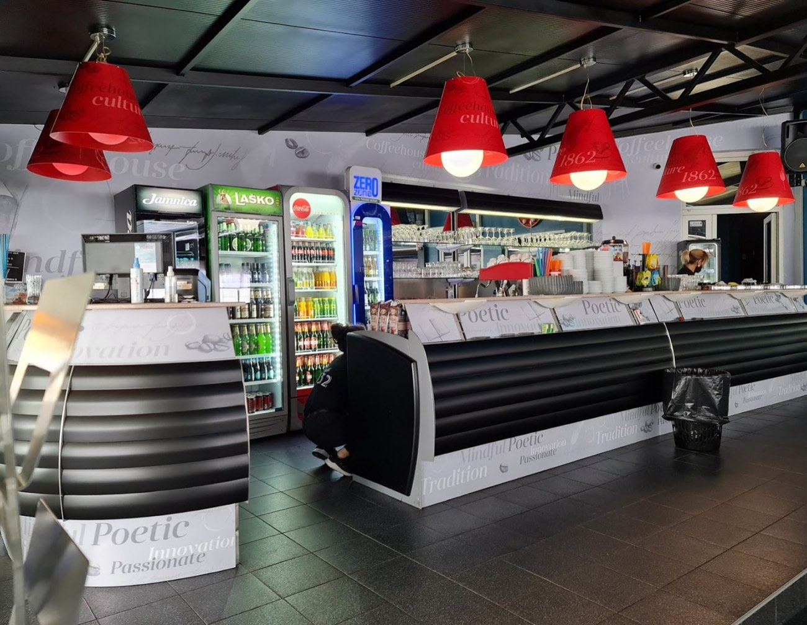
Jutarnja kava
Šank se otvara u 6 (nedjeljom u 7). Prva kava dana za šankom, za stolom ili na terasi.
Otvaramo u 6 ujutro, a petkom i subotom ostajemo do 2. Šank, salon i velika terasa na Strossmayerovoj 6.
Pon – čet 6–24 · pet – sub 6–2 · ned 7–24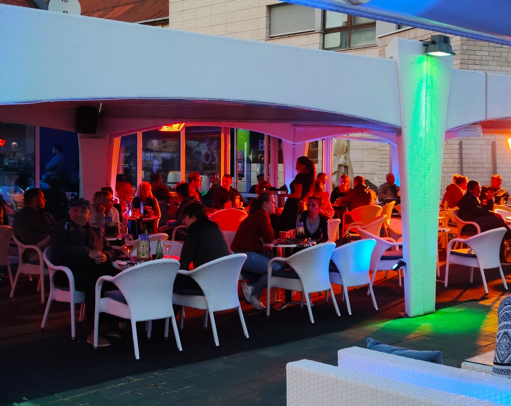
Isti stol, drugo raspoloženje: jutarnja kava prije posla, popodne nešto hladno na terasi, a navečer kokteli pod neonskim svjetlom.

Šank se otvara u 6 (nedjeljom u 7). Prva kava dana za šankom, za stolom ili na terasi.
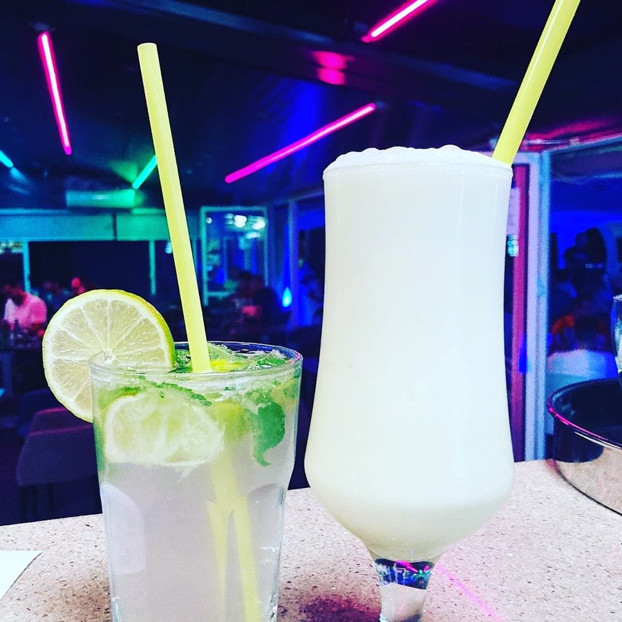
Limunade, hladni napitci, a kad zahladi topla čokolada sa šlagom.
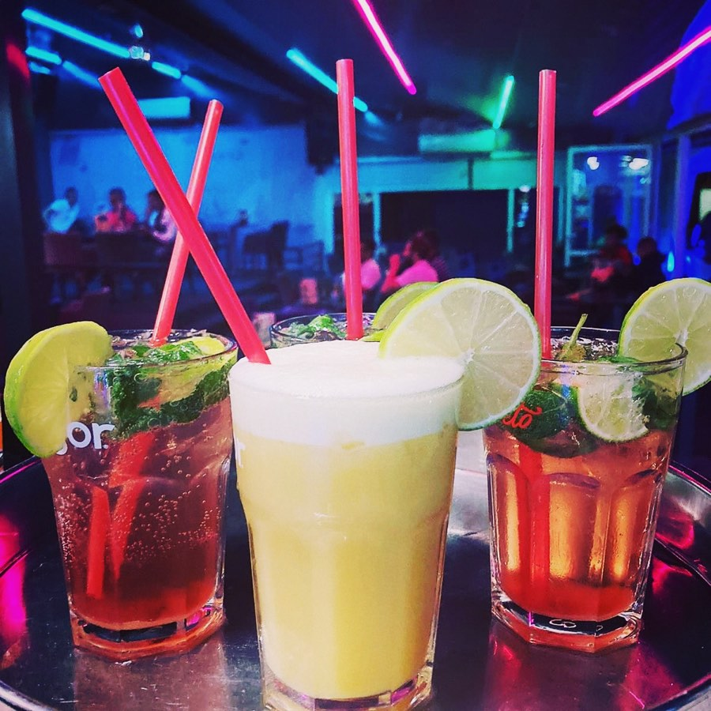
Kokteli, pivo i vino uz glazbu. Petkom i subotom radimo do 2 sata.
Bijeli paviljon terase, plavo-sivi salon s baršunastim foteljama i zelenilom, i šank pod crvenim lampama. Mjesta ima i za jednu kavu i za cijelo društvo.
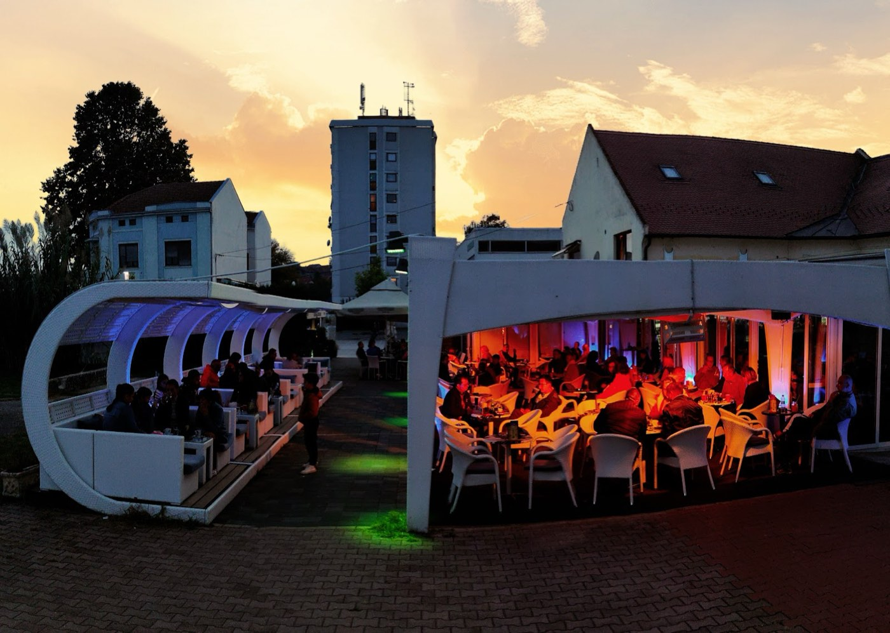
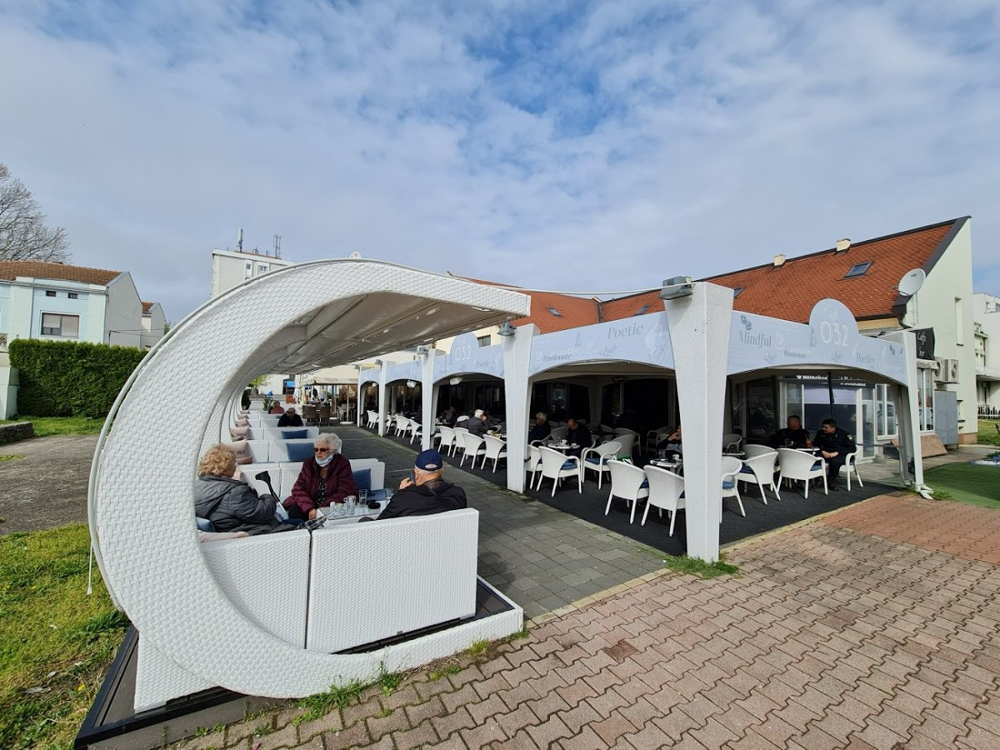
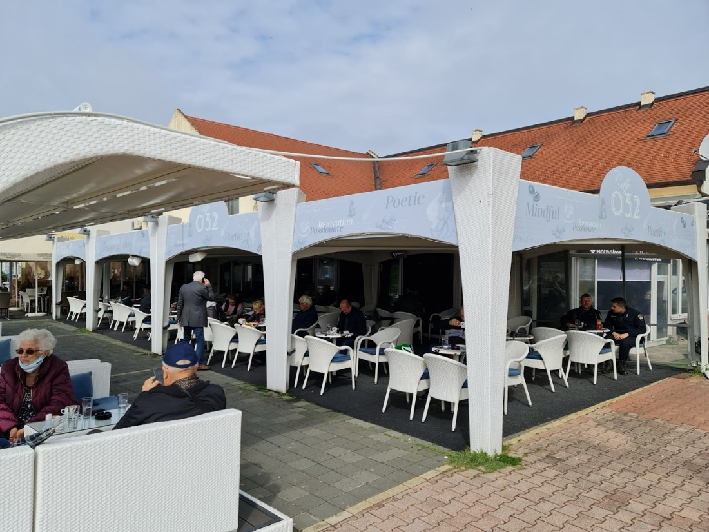
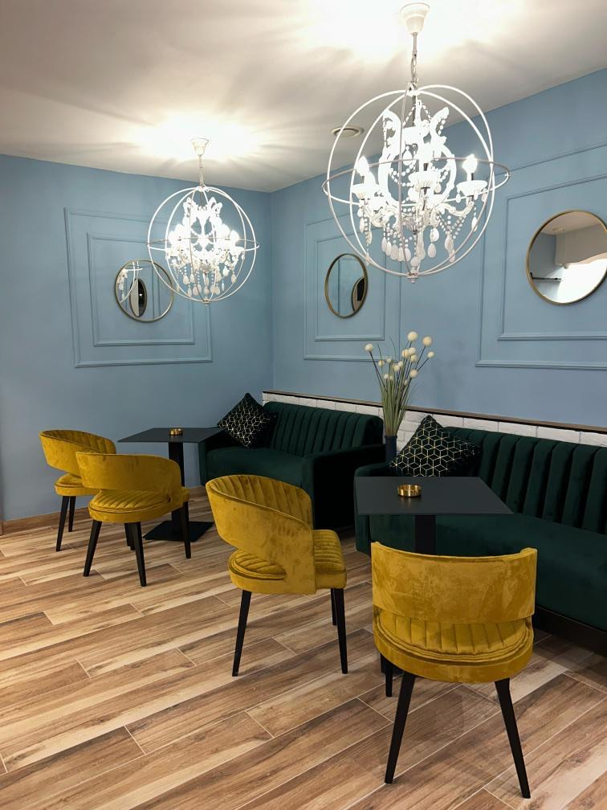
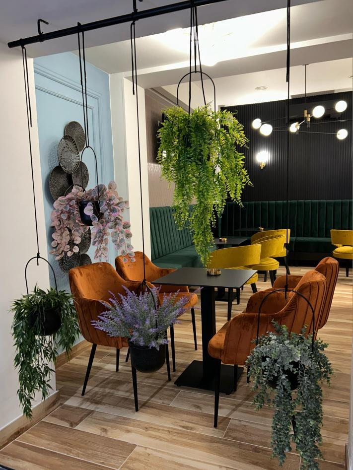
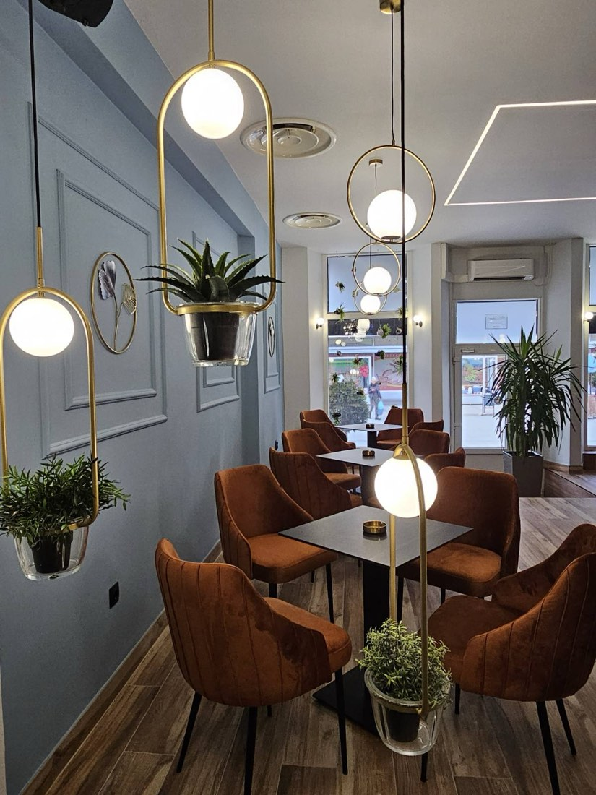
Strossmayerova 6, u samom središtu Vukovara.
Otvoreno svaki dan, petkom i subotom do 2 sata.
Besplatni Wi-Fi za goste, plaćanje debitnim karticama.
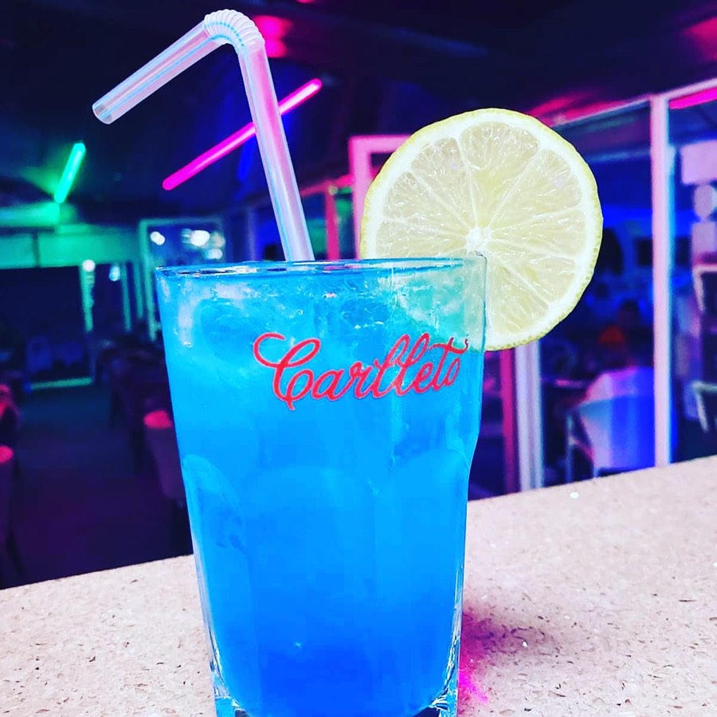
Ružičasto i plavo svjetlo, glazba i pune čaše na stolu. Gosti posebno hvale koktele, a jedan od njih, King Kong, ima i svoje obožavatelje.
★★★★★„Prostrano, uredno, ne čeka se dugo, ima terasu, dobra lokacija, osoblje uslužno i komunikativno.”
Bauk Cro
★★★★★„Super mjesto za sjesti na koktele. King Kong koktel izuva iz cipela. Vraćam se opet.”
Dominik Radić
★★★★★„Ugodan i moderan ambijent u srcu Vukovara. Idealno mjesto za opuštenu kavu tijekom dana ili večernje piće s prijateljima.”
Borislav Djacanin
★★★★★„Topla bijela čokolada s raznim dodacima (oreo keksi i šlag) je savršena!”
Sara Popović
★★★★★„Super terasa s mnogo mjesta za sjedenje, a i osoblje je uslužno.”
Josip Preksavec
★★★★★„Redovni sam gost, mislim da to sve govori. Osoblje uslužno i nasmijano.”
Vinko Kovac
Recenzije su s Google profila Caffe bara 032, skraćene i bez emotikona. Prosječna ocjena 4,6 iz 1.513 recenzija.
Rođendan ili okupljanje s prijateljima? Javite se unaprijed pa ćemo vam čuvati mjesto.
Datum, vrijeme, broj osoba i želite li terasu ili salon.
Obrazac otvara pripremljenu poruku u vašem programu za e-poštu.
Javljamo vam se s potvrdom. Za brzi dogovor nazovite 091 203 2100.
Od ponedjeljka do četvrtka od 6 do 24 sata, petkom i subotom od 6 do 2 sata, nedjeljom od 7 do 24 sata.
U Ulici Josipa Jurja Strossmayera 6 u Vukovaru (32000). Uz lokal ima parkirališta pod naplatom.
Da, uz lokal je velika natkrivena terasa s mnogo mjesta za sjedenje.
Nazovite 091 203 2100 ili pošaljite upit e-poštom na ivanasivos@gmail.com i dogovorit ćemo stol za vaše društvo.
Da, gostima je dostupan besplatni Wi-Fi, a plaća se i debitnim karticama.
| Ponedjeljak | 6–24 |
| Utorak | 6–24 |
| Srijeda | 6–24 |
| Četvrtak | 6–24 |
| Petak | 6–2 |
| Subota | 6–2 |
| Nedjelja | 7–24 |